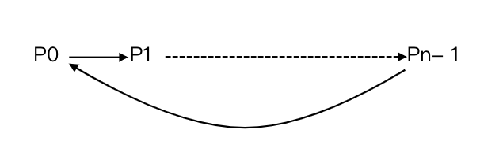
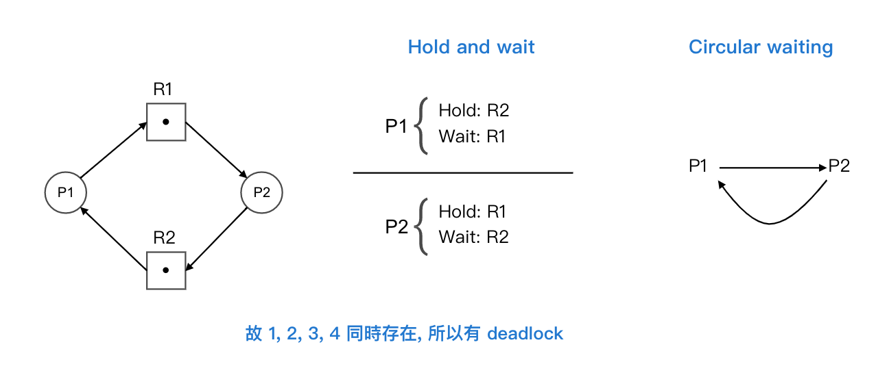

3.5 死結 Deadlock
目錄
- 四要件
- Deadlock 處理方式
- Deadlock Free
四要件
- Mutual Exclusion 互斥
Def: 指資源同時只允許一個 process 使用之, ex: printer, card reader - Hold & Wait 持有並等待
Def: 指一 process 取得部分資源, 又在等其他資源
圖：
- No preemptive
Def: 指一旦 process 取得某資源, 則其他的 process 無法搶奪, 除非其自願放棄 - Circular waiting 循環式等待
Def: 只存在一組 process, 形成如下的 waiting cycle:
 Note: Pi -> Pj => Process i 在等 Process j 手中的資源
- Ex: 令資源具 Mutual Exclusiion 跟 No preemptive, 則

Compare
| Description | Deadlock | Starvation |
|---|---|---|
| 定義 | 存在一組 process, 形成 wait cycle, 使 cycle 內之 process 皆不可使用 CPU (因為皆 wait) | low priority 的 process 長期或無限期無法取得 CPU |
| 影響 | CPU utilization 跟 throughput 大幅下降 | 不見得 |
| 起因 | 資源分配不當 | 當有 priority 之分 |
| 解決 | deadlock 預防, 避免, 偵測與恢復 | Aging Tech 老化現象 |